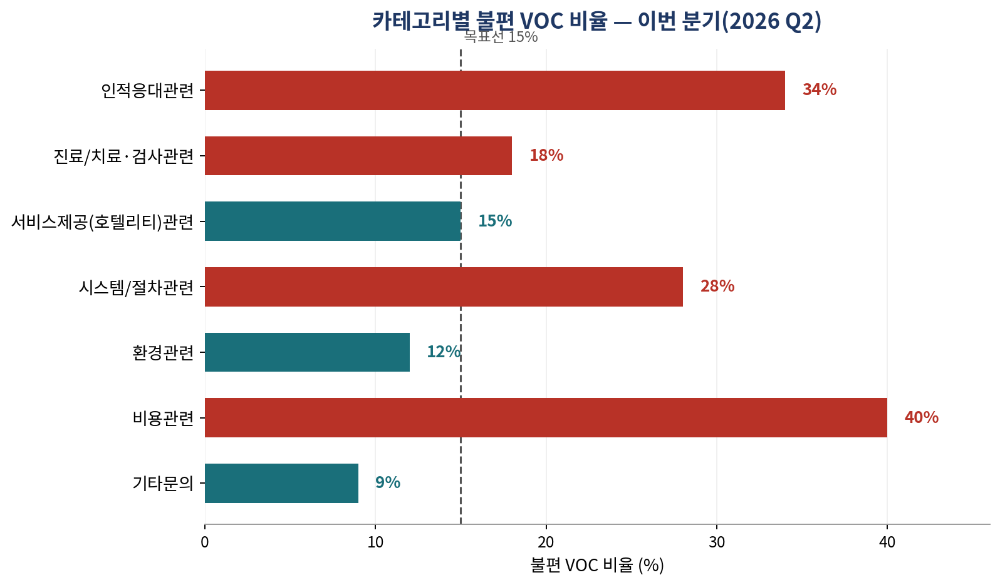
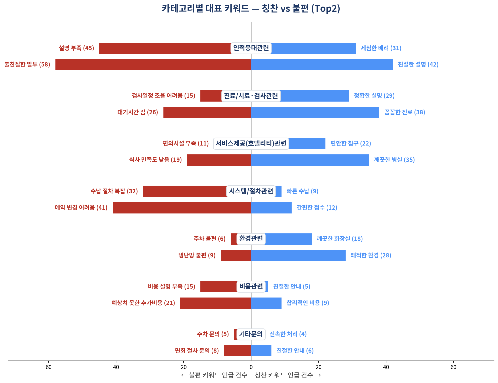
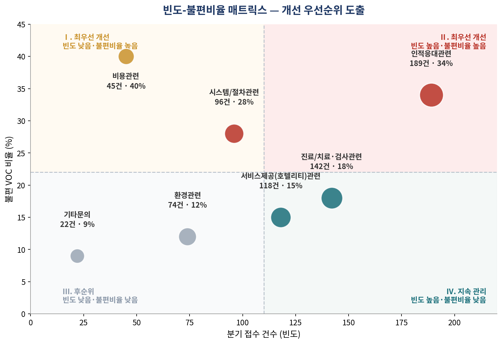
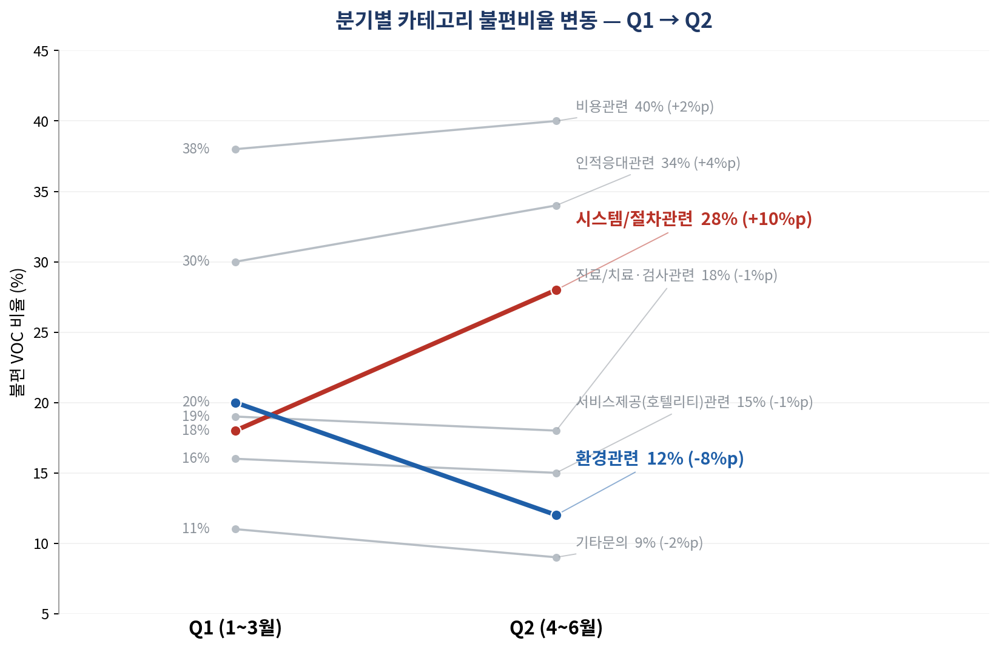

수원윌스기념병원 · 경영진 보고
이번 분기(2026 Q2) 불편 VOC 비율 23.8% · 686건 접수 → 목표 불편비율 15% 이하
| 보고일 | 2026년 7월 8일 | 보고 대상 | 병원장 및 경영진 |
| 작성 | QI팀 (VOC 담당) | 문서 등급 | 대외비 |
※ 본 보고서는 PIX 기능설계용 목업이며, 표시된 모든 수치는 예시 데이터입니다. 실제 보고서는 VOC 접수 원자료를 기준으로 동일한 구조로 자동 생성됩니다.
1.개요 및 결과 요약
1-1. 목표 설정 — 3단계로 15% 이하 도달
이번 분기 불편 VOC 비율은 23.8%로 전분기(22.5%) 대비 +1.3%p 상승했습니다. 특히 시스템/절차관련이 한 분기 만에 +10%p 급등해 원인 파악이 시급합니다. 목표(15% 이하)를 3단계로 나누어 단계적으로 접근합니다.
| 단계 | 시점 | 목표 불편비율 | 핵심 대상 | 필요 감소 |
|---|---|---|---|---|
| 1단계 | Q3(7~9월) | 20.0% | 인적응대·시스템절차 | −3.8%p |
| 2단계 | Q4(10~12월) | 17.0% | 비용관련 추가 | −3.0%p |
| 3단계 | 2027 Q1 | 15.0% 이하 | 전 카테고리 | −2.0%p |
1-2. 핵심 결론
현재: 불편 VOC 비율 23.8%(686건 중 163건)로 전분기 대비 +1.3%p 상승했습니다. 7개 카테고리 중 3개(인적응대·시스템절차·비용관련)가 목표선(15%)을 크게 웃돕니다.
목표: Q3 20.0% → Q4 17.0% → 2027 Q1 15.0% 이하로 3단계 감소 로드맵을 추진합니다.
최우선 과제: 인적응대관련입니다. 발생 빈도(189건)와 불편비율(34%)이 모두 높아 개선 효과가 가장 큽니다.
결정 요청: 경영진 결정이 필요한 사항은 총 5건이며, 8월 10일까지 승인이 이뤄져야 8월 중 착수가 가능합니다.
2.카테고리별 VOC 분석
2-1. 카테고리별 비교
[차트1] 카테고리별 불편 VOC 비율 — 이번 분기(2026 Q2)

빨강: 목표선(15%) 초과 · 청록: 목표선 이하 · 점선은 목표선 15%
| 카테고리 | 이번분기 | 전분기 대비 | 목표(15%) 대비 | ||
|---|---|---|---|---|---|
| 전분기 | 갭 | 목표 | 갭 | ||
| 인적응대관련 | 34% | 30% | ▲ +4%p | 15% | ▲ +19%p |
| 진료/치료·검사관련 | 18% | 19% | ▼ −1%p | 15% | ▲ +3%p |
| 서비스제공(호텔리티)관련 | 15% | 16% | ▼ −1%p | 15% | ▲ +0%p |
| 시스템/절차관련 | 28% | 18% | ▲ +10%p | 15% | ▲ +13%p |
| 환경관련 | 12% | 20% | ▼ −8%p | 15% | ▼ −3%p |
| 비용관련 | 40% | 38% | ▲ +2%p | 15% | ▲ +25%p |
| 기타문의 | 9% | 11% | ▼ −2%p | 15% | ▼ −6%p |
빨간 카테고리 3개는 목표선을 크게 초과한 항목입니다.
인적응대관련: 189건으로 전체 카테고리 중 접수 건수가 가장 많고, 불편비율도 34%로 목표선(15%)의 두 배를 넘습니다. 빈도와 심각도가 모두 높아 개선 시 효과가 가장 큽니다.
비용관련: 건수(45건)는 적지만 불편비율이 40%로 전 카테고리 중 가장 높습니다. 발생하면 불만으로 이어질 확률이 가장 높은 항목입니다.
2-2. 카테고리별 대표 키워드
카테고리별 대표 키워드 — 칭찬 vs 불편 (Top2)

왼쪽(빨강): 불편 키워드 · 오른쪽(파랑): 칭찬 키워드 · 막대 길이는 언급 건수
불친절한 말투(58건)가 전 카테고리·전 키워드 중 가장 많이 언급됐습니다. 인적응대관련이 1순위 개선과제로 선정된 이유가 건수·비율뿐 아니라 키워드로도 뒷받침됩니다. 시스템/절차관련은 예약 변경 어려움(41건), 비용관련은 예상치 못한 추가비용(21건)이 각각 대표 불편 키워드입니다.
3.개선 우선순위
7개 카테고리를 가로축(분기 접수 건수)과 세로축(불편 VOC 비율) 두 기준으로 나누어 어디부터 손대야 할지 시각화했습니다. 오른쪽 위(빈도·비율 모두 높음)일수록 개선 효과가 큽니다.
[차트2] 빈도-불편비율 매트릭스 — 개선 우선순위 도출

I·II 최우선 개선 · III 후순위 · IV 지속 관리
3-3. 분기별 변동 분석
분기별 카테고리 불편비율 변동 — Q1 → Q2

빨강: 시스템/절차관련 급등(+10%p) · 파랑: 환경관련 급개선(−8%p)
4.실행 계획 (Phase 1, 2026년 8월)
Phase 1(8월, 원인 진단 및 응대 개선) → Phase 2(9~11월, Q3 목표 운영) → Phase 3(12월~, 상시 관리체계 구축)의 3단계 중 경영진 결정이 필요한 Phase 1 핵심 과제입니다.
| 순위 | 개선 과제 | 담당 | Q3 목표 | 기한 |
|---|---|---|---|---|
| 1 | 인적응대 응대매뉴얼 표준화 및 전 직원 교육 | 간호부·진료부 | −10%p | 8/31 |
| 2 | 시스템/절차 프로세스 재정비(수납·예약) | 원무·전산팀 | −8%p | 8/31 |
| 3 | 비용관련 사전 안내 강화(수납 전 설명) | 원무 | −12%p | 8/20 |
| 4 | 인적응대 병동별 편차 진단 | QI팀·간호부 | 원인 규명 | 8/25 |
| 5 | 진료/치료 설명 프로세스 점검 | 진료부 | −3%p | 9월 內 |
| 6 | 환경관련 개선사례 확산 | 시설·간호부 | 유지 | 10월 |
인적응대관련은 접수 건수(189건)와 불편비율(34%) 모두 전 카테고리 중 가장 높습니다. 발생 빈도가 가장 크면서 불편 강도도 가장 세, 같은 노력을 투입했을 때 전체 불편비율을 낮추는 효과가 가장 큽니다. 시설투자 없이 응대 교육만으로 4주 내 실행이 가능하다는 점도 우선순위를 뒷받침합니다.
Phase 2·3 요약
5.기대효과 및 의사결정 요청
기대효과
미실행 시 리스크
경영진 의사결정 요청 (5건)
QI팀 권한으로는 실행할 수 없으며, 경영진 결정이 있어야 8월 중 착수가 가능합니다.
| No | 요청 사항 | 필요 사유 | 기한 |
|---|---|---|---|
| 1 | 인적응대 표준교육 예산 승인 및 전 직원 필수 이수 지정 | 빈도·비율 모두 최고 영역 | 8/10 |
| 2 | 원무 프로세스 개편 승인(수납·예약 시스템) | 전산팀 협조 없이 불가 | 8/10 |
| 3 | VOC 대응 전담 TF 구성 승인(QI·간호부·원무·전산) | 전 병원 과제, 상설 협의체 필요 | 8/10 |
| 4 | 병동별 VOC 결과 공개 및 성과 연동 승인 | 병동 자율개선 유인 필요 | 8/10 |
| 5 | Q3(7~9월) VOC 대응 전담 인력 지정 | 미해결 VOC가 재접수로 직결 | 8/25 |